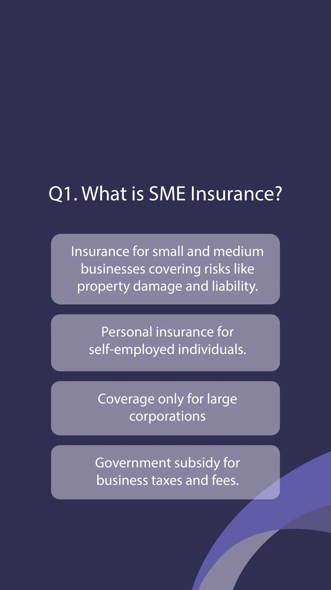
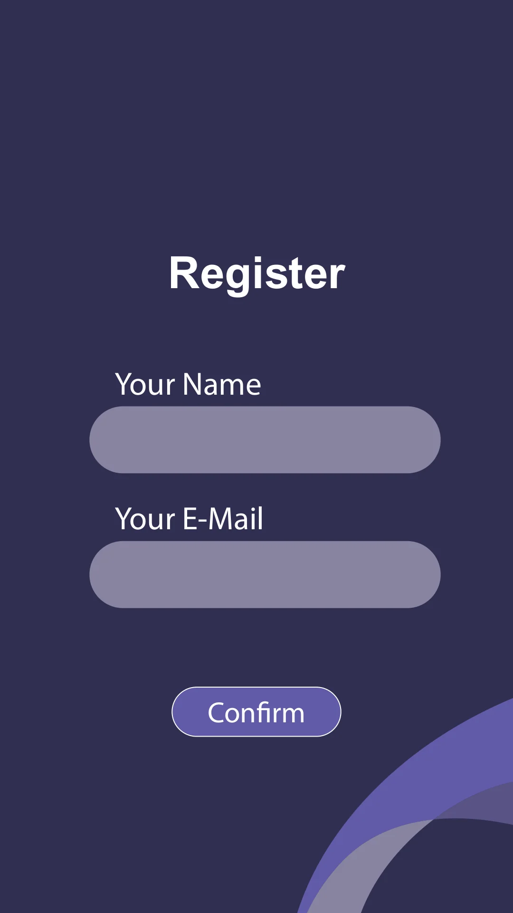

Registration before question
A short native read confirmed two artboards: a registration layout and an SME-insurance multiple-choice question.
A short path from entry to a question.
Explore the story
Keep registration and multiple-choice content clear within a pillar-screen format.
The first artboard groups empty name and email fields with confirmation. The second introduces a single information question and four answer choices.
A short native read confirmed two artboards: a registration layout and an SME-insurance multiple-choice question.
The complete question-and-four-answer artboard is prepared as a native derivative with only isolated header identity removed; full bounds and all educational content remain unchanged.
Explore the complete compositions and interface states. Select any image for a closer look.
02 / PROJECT IMAGES
Select a view to explore.
Portrait quiz screen with an SME-insurance question and four large lavender answer panels on dark purple.
Purple registration design with empty name and email fields and a Confirm button.

Structure, interaction and visual decisions that give the work its character.
RoleConfirm registration/question layout, pillar-format adaptation and developer handoff.
AssetsCredit supplied insurance copy, identity, hardware and quiz/registration implementation. Educational copy is not independently validated advice.
StatusPrivate source/output study; contribution, implementation, final approval and delivered use remain unverified.